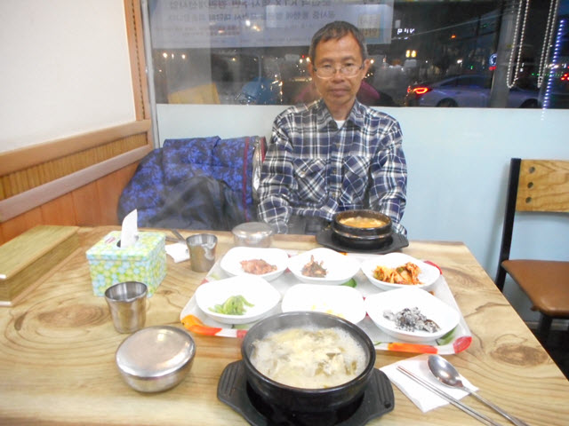

在順天竹島峰山頂上的江南亭展望台欣賞完順天市夜景, 約晚上七時十分, 原本想逗留多一會, 無奈我的相機電池已經耗盡, 只看不能拍照極為掃興, 而黑幕早已拉下, 便決定離開, 返回山下。
沿樓梯走下江南亭展望台, 來到順天竹島峰山頂公園, 這時四周已經一片漆黑, 如何下山? 我們唯一熟悉的是先前上山那步道, 但想起那陰森的竹林步道, 日間已經那麼恐怖, 晚上真不敢想像, 太危險了!
不敢走上山那段陰森竹林步道 摸黑冒險走另一步道
怎麼辦? 麻煩了! 被困山上, 四周又沒有人! 正在徬徨之際, 想起江南亭附近有一條步道, 應該也可以下山的, 看來好走很多, 只是不知通往那裡? 我走來的時候也有和這步道拍照。
接著走到步道入口, 黑暗中還記得就是這步道。
「你肯定這步道可以下山架?」
「應該可以的! 而且這方向是往那座優美教堂的, 如果真的是通往山下那裡, 比起先前上山那段路, 可能會走少一些添!」
接著便摸黑沿石級小心翼翼往下走, 走了一會, 來到一條馬路, 也沒選擇, 循彎彎曲曲的馬路繼續向下走, 起初一段好像是在山中拐圈, 然後只是在山腰中一直向前走, 不像是通往山下的, 這步道可以下山的信心開始動搖, 但來到這裡, 已經沒有其他選擇, 唯有硬著頭皮繼續向前走。沿昏暗馬路旁又繼續走了一會, 突然間, 右邊房屋間有一條狹窄往下的小路, 看來是通往山下的, 便立即轉右循小路一直往下走。
來到小道山下的出口, 看見右邊遠處那座優美教堂, 這時才鬆了一口氣。步道的登山口並不是我們所期望的在教堂附近, 而是離頗遠的地方。
離開步道登山口, 沿民居間的道路走, 來到長垈公園對面的馬路, 我們下午從順天火車站走來竹島峰的登山口時也經過這裡, 對附近街道還有印象, 沒問題了! 接著走過馬路, 跨過火車道, 循馬路一直走, 不一會便返回順天火車站對面的馬路。
賓館附近餐館 簡單湯飯晚餐
來到賓館附近的街道, 經過兩間非常平民化的餐館, 因昨晚「豪」了一餐, 今晚要節省一些, 便在其中一間吃晚餐。進入餐館, 坐下來, 每人按圖片各自叫了一客湯飯。
我叫了這個, 送來時才知道是豆腐蜆肉湯飯。
她叫了這個海鮮蜆肉湯飯。
等了一會, 前菜送來, 十分簡單。
主菜也送來了。

味道一般, 沒什麼特別, 蜆肉有沙, 是唯一扣分的地方。這一餐十分便宜, 每客是 5,000 韓元, 結帳只是 10,000 韓元。
吃完晚飯, 步行一會便到達賓館, 返回1F房間, 因晚餐不是太飽, 便將前晚餘下的三十多顆草莓吃清, 這時才感覺到一些滿足。
休息了一會, 寫了今天精彩難忘行程的日記。洗澡。睡前往韓國氣象廳看看明天寶城的天氣預測, 哈哈~~ 天晴! 可以安心睡覺了!